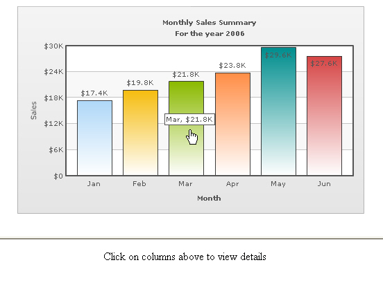

| Linking to Frames |
FusionCharts XT allows you to open links in specified frames too. To do so, you just specify the name of the frame in the link itself. This feature can be very useful when creating simulated drilldown reports and dashboards. To open link in a specified frame, you need to set the link as under: <set ... value='2235' link='F-FrameName-ShowDetails.asp%3FMonth%3DJan' ... > The first character in the link is F, denoting that we need to open this link in a frame. Post F, we add a dash character (-) and then specify the name of frame in which we want the link to open. Soon after the frame name, we add another dash character and finally write the actual link which is to be opened. Again, the link needs to be URL Encoded. Advanced Note : You can provide _parent as the name of the frame. The URL will get loaded in the frame or browser window which is the parent of the current window. Typically, the main browser space becomes the parent frame that contains all the frames. Hence, if you wish to remove all frames and load the URL freshly on the same location you can use _parent as the name of the frame. XML Example: |
<chart caption='Monthly Sales Summary'
subcaption='For the year 2006' xAxisName='Month' yAxisName='Sales' numberPrefix='$'>
<set label='Jan' value='17400' link='F-detailsFrame-../DemoLinkPages/DemoLink1.html'/>
<set label='Feb' value='19800' link='F-detailsFrame-../DemoLinkPages/DemoLink2.html'/>
<set label='Mar' value='21800' link='F-detailsFrame-../DemoLinkPages/DemoLink3.html'/>
<set label='Apr' value='23800' link='F-detailsFrame-../DemoLinkPages/DemoLink4.html'/>
<set label='May' value='29600' link='F-detailsFrame-../DemoLinkPages/DemoLink5.html'/>
<set label='Jun' value='27600' link='F-detailsFrame-../DemoLinkPages/DemoLink6.html'/>
</chart> |
In this example, the main frameset is contained in FrameExample.html, which has two vertical frame pane- one on top containing the chart (FramePages\FrameChart.html) and one on bottom to show the linked frame pages. The bottom pane by default shows FramePages\LowerFrame.html which contains the message "Click on columns above to view details ". The setup looks as under: |
|  See it live! The HTML code of FrameExample.html is as under: |
<html>
<head>
<title>FusionCharts XT Frame Drill-down example</title>
</head> |
The top frame (FramePages\FrameChart.html) contains the chart and is named as chartFrame. The bottom frame responds to click events from the chart - it is named as detailsFrame, and we use this name in our XML data links. When the user now clicks on the chart links, they open up in detailsFrame frame pane, which is what we exactly wanted to. Note: Internally the chart decodes a URL that you set as link. Before invoking the link it again encodes the URL. If you are passing multilingual characters via a URL or do not want this decode-encode mechanism to be handled by chart, you can set unescapeLinks='0' in <chart> element of the chart's XML data. If you are using JSON data, you need to use { "chart" : { "unescapeLinks" : "0" ... } ... } . |